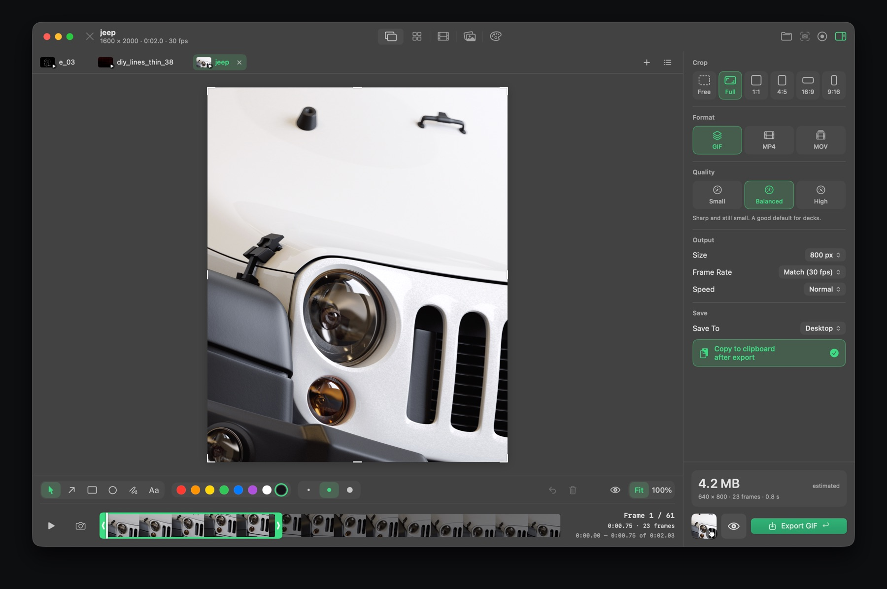
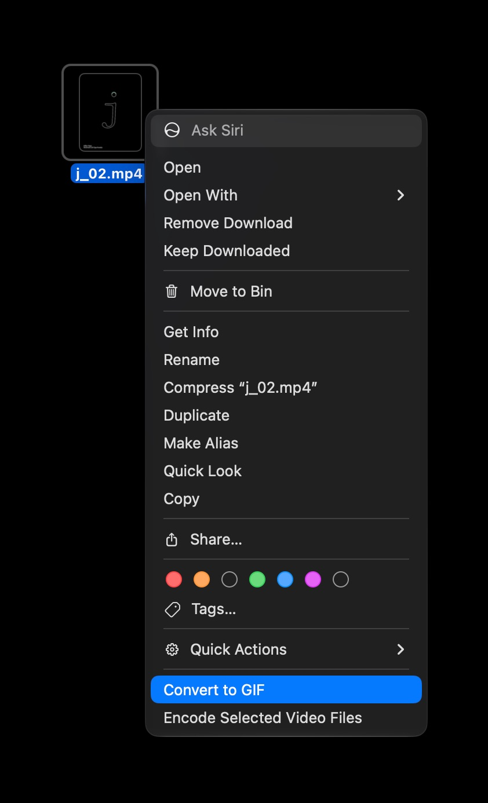

How to convert a video to a GIF on a Mac
macOS doesn't have a simple built-in way to turn a video into a GIF. Here's how to do it in a couple of clicks, and how to keep the file small.

The quickest way: right-click in Finder

With Feedback installed, right-click one or more videos in Finder and choose Quick Actions › Convert to GIF. The GIF is made in the background and saved next to the video, without opening the app.
With more control
- Open the video in Feedback (drag it onto the window or press ⌘O).
- Trim it with the yellow handles, or press I and O at the playhead.
- Crop it if you only need part of the frame.
- Choose GIF, a quality, a size and a frame rate. The estimated file size updates as you go.
- Press Return to export. It's copied to the clipboard too, ready to paste into Slack.
How to keep a GIF small
- Shorter is smaller. Trim to the part that matters.
- Size: 600–800 px wide is plenty for chat and docs.
- Frame rate: 12–15 fps looks smooth for screen recordings.
- Crop away anything that isn't needed.
- If it still needs sound or must be tiny, export as MP4 instead.
Feedback for Mac
Screenshots, markup, screen recording, GIFs, storyboards, reference boards and color palettes in one small, fast app. Free to download.
Download on the Mac App StoreQuestions
How do I make a GIF from a video on a Mac?
Install Feedback, then right-click the video in Finder and choose Quick Actions › Convert to GIF. Or open it in Feedback to trim, crop and set the size first.
How do I make a GIF smaller?
Trim it, lower the size to around 600–800 px wide, use 12–15 fps, and crop out anything you don't need.